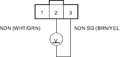
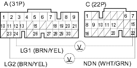
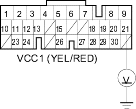
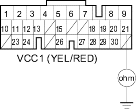

- Turn the ignition switch ON (II).
- Measure the voltage between CVT driven pulley speed sensor connector terminals No. 2 and No. 3.
CVT DRIVEN PULLEY SPEED SENSOR CONNECTOR

Wire side of female terminals
Is there about 5 V?
YES - Go to step 17.
NO - Go to step 12.
- Measure the voltage between PCM connector terminals C15 and A23 or A24.
PCM CONNECTORS

Wire side of female terminals
Is there about 5 V?
YES - Repair open in the wire between PCM connector terminal C15 and the CVT driven pulley speed sensor. 
NO - Check for loose terminal fit in the PCM connectors. If necessary, substitute a known-good PCM and recheck.
- Measure the voltage between PCM connector terminal A21 and body ground.
PCM CONNECTOR A (31P)

Wire side of female terminals
Is there 4.75-5.25 V?
YES - Repair open in the wire between PCM connector terminal A21 and the CVT driven pulley speed sensor.
NO - Go to step 14.
- Turn the ignition switch OFF.
- Disconnect PCM connector C (22P).
- Check for continuity between PCM connector terminal A21 and body ground.
PCM CONNECTOR A (31P)

Wire side of female terminals
Is there continuity?
YES - Repair short to ground in the wire between PCM connector terminal A21 and the CVT driven pulley speed sensor.
NO - Check for loose terminal fit in the PCM connectors. If necessary, substitute a known-good PCM and recheck.